Stanford CS329Z · Lecture 1 · Introduction to Agentic Systems
Diyi Yang introduces the engineering of AI agents through five topics: course logistics, the history of agents, agent architectures, compound AI systems, and challenges in training, evaluation, and safety.
The tables follow the original slide order. Read the edited English lecture text alongside each slide. Video ranges are approximate.
Course website · Original slides · Full lecture and English captions
本课目录
Part 1
Course logistics
| Slide | Lecture text |
|---|---|
Slide 01 · Engineering AI Agents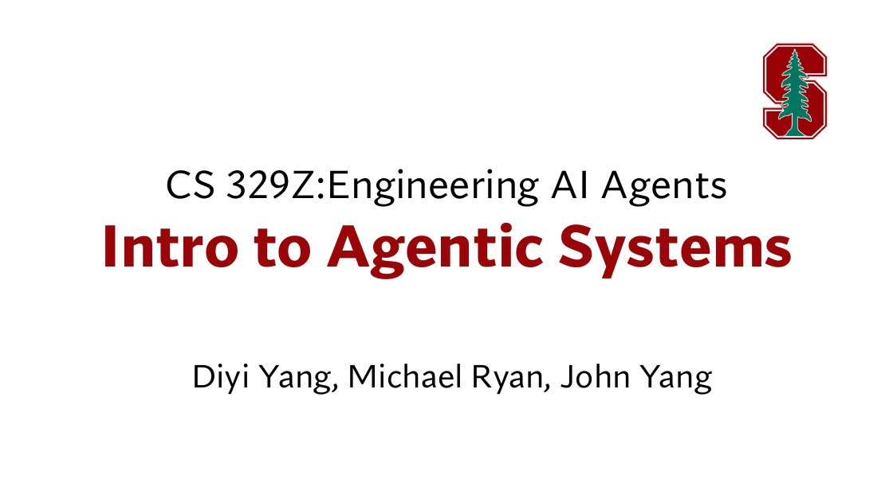 |
Welcome to CS329Z, Engineering AI Agents. I’m Diyi Yang, and I am teaching this course with Michael Ryan and John Yang. In our first lecture, we will cover the course logistics, trace the history of agents, and examine what an agent is made of. We will also introduce open problems that we will return to during the quarter. |
Slide 02 · Welcome to CS329Z: Engineering AI Agents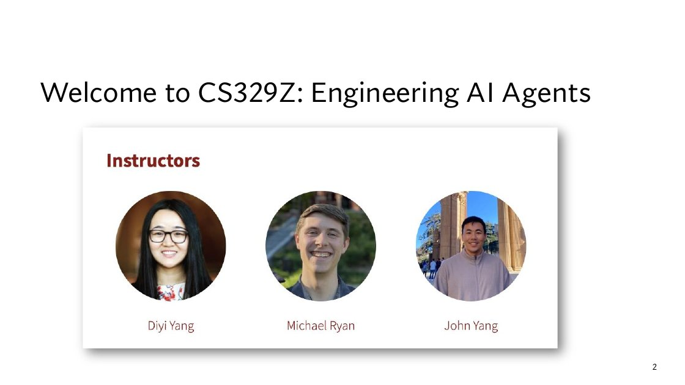 |
Michael Ryan is a second-year Stanford PhD student working on open-source, human-centered AI. His work on DSPy focuses on programming language models. John Yang is a third-year Stanford PhD student who works on coding agents and their evaluation. His projects include SWE-bench, SWE-agent, ProgramBench, and SWE-smith. |
Slide 03 · Welcome to CS329Z: Engineering AI Agents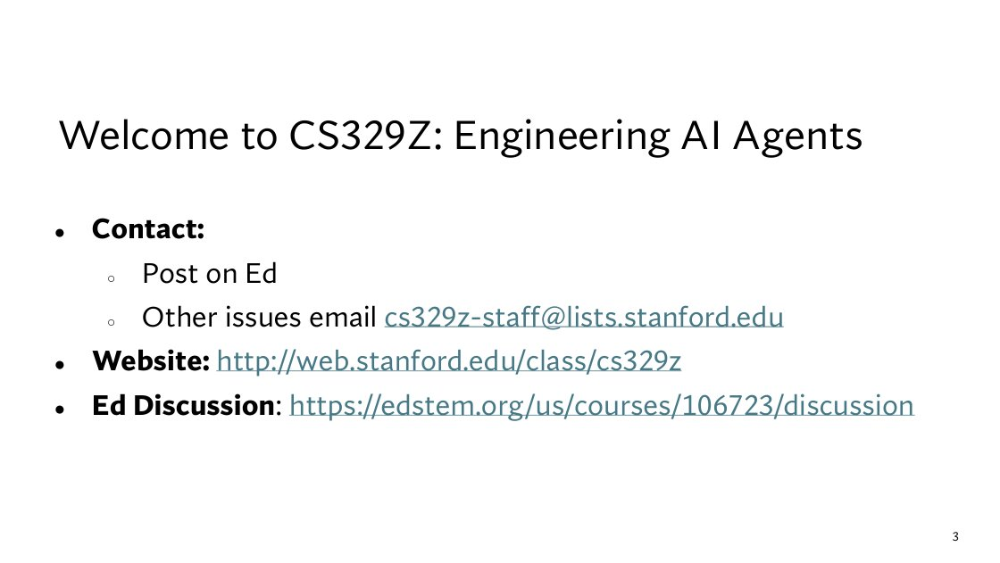 |
Use Ed Discussion as your primary point of contact with the course team. If you need to be added, email the course mailing list so the teaching team can respond. Announcements will appear on Ed Discussion, and the course website will maintain the lectures, slides, and homework. |
Slide 04 · Lecture Overview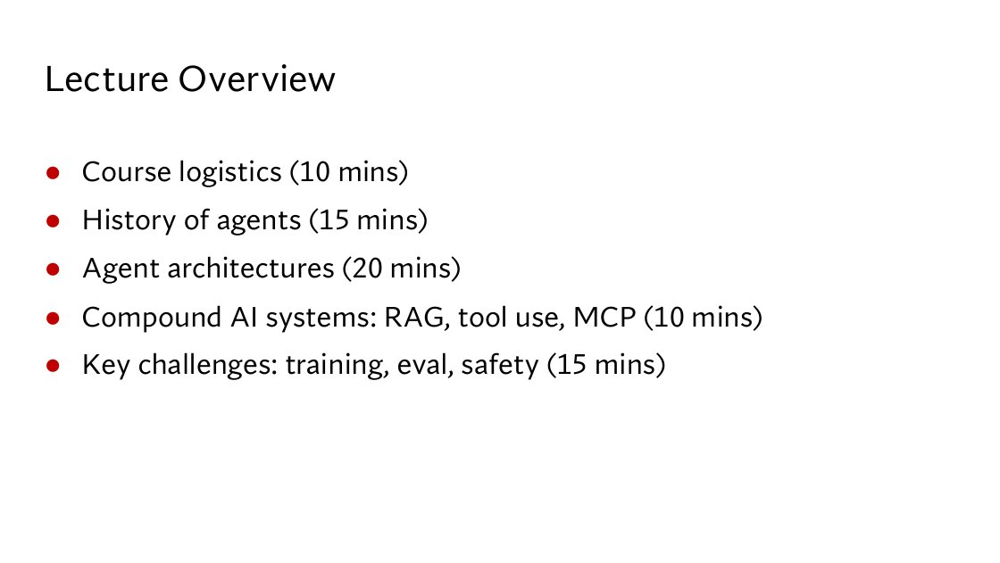 |
We will begin with the course logistics and then look at the long history behind agents. The main technical topic today is agent architecture. From there, we will look at compound AI systems, retrieval-augmented generation, tool use, and MCP. We will finish with several open challenges, including risks that arise when multiple agents interact. |
Slide 05 · Why CS329Z: Engineering AI Agents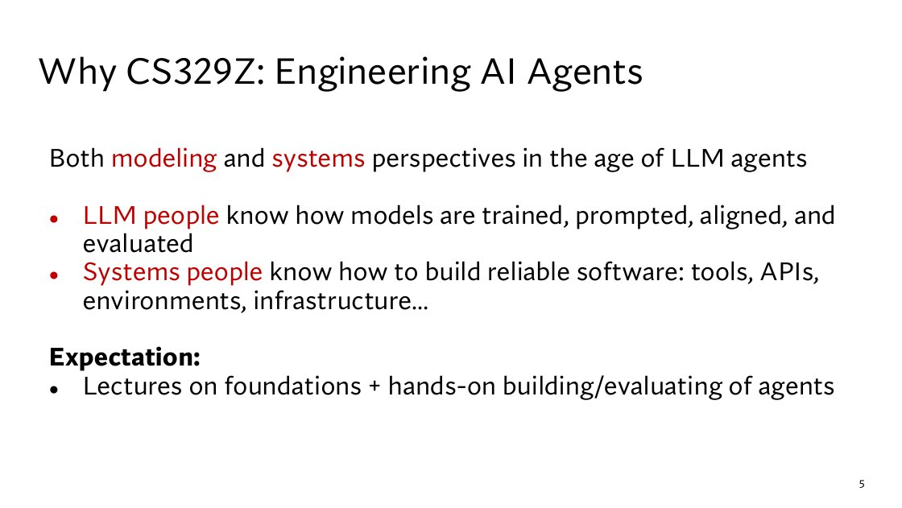 |
There are two perspectives on building agents. From the modeling side, the important questions include how language models are pretrained, post-trained, prompted, aligned, and evaluated. From the systems side, the work involves making reliable tools, APIs, environments, and infrastructure. An agent brings these pieces together. This course will cover the foundations and give you practice building and evaluating agents yourself. |
Slide 06 · A Quick Glance of CS329Z: Foundational Basics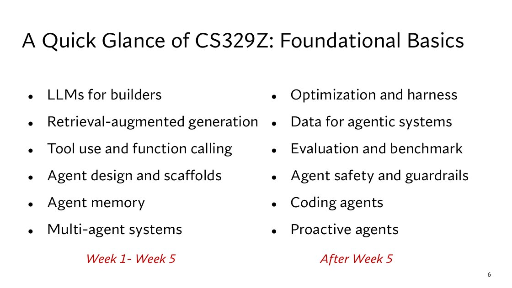 |
In the first half of the course, we will look at language models from a builder’s perspective. Retrieval-augmented generation and its variants will be one focus, followed by tool use and function calling. We will then move into agent design and scaffolding, training, memory, orchestration, and multi-agent systems. In the second half, we will examine optimization, harnesses, and the data agents use, including how to choose that data and assess its quality. We will also cover evaluation, benchmark design, safety, and guardrails. Coding agents and proactive agents will each receive attention. |
Slide 07 · A Quick Glance of CS329Z: Special Guests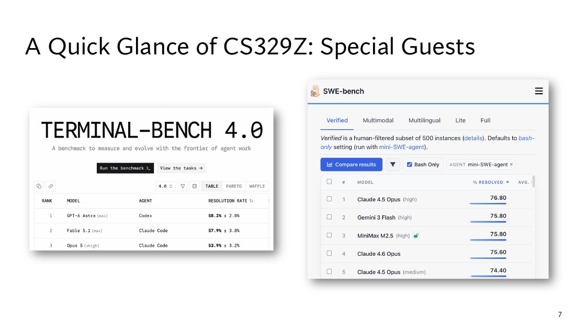 |
We will hear from two teams that designed influential benchmarks. The Terminal-Bench team will discuss how it built its benchmark, and the SWE-bench team will visit as well. These sessions are an opportunity to ask the people who built the evaluations about their design choices. |
Slide 11 · Course Policy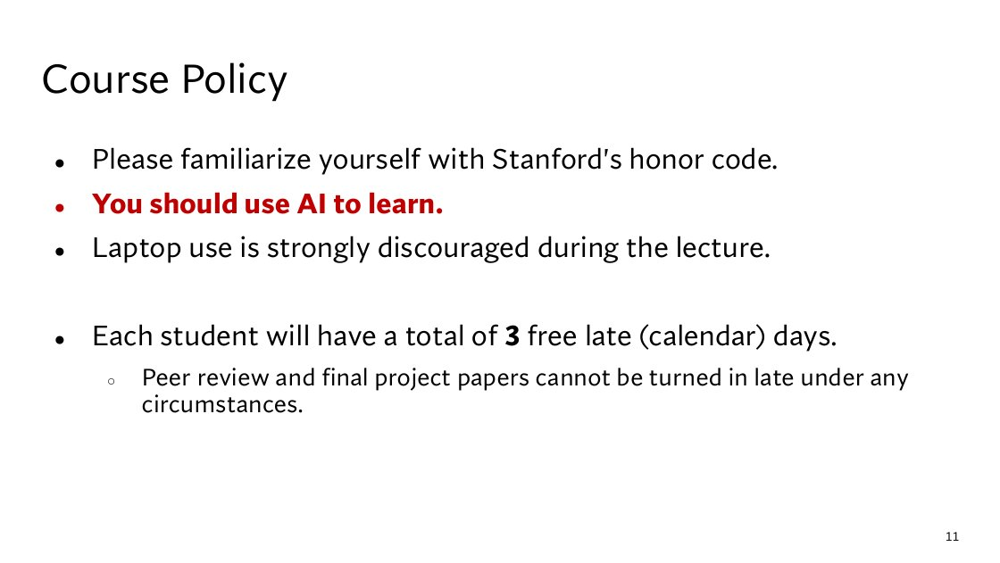 |
Use AI as a way to learn, and familiarize yourself with Stanford’s honor code. For the lecture itself, reserve laptops for activities such as taking notes. We discourage using them for other work during class because it makes it harder to focus. |
Slide 12 · Prerequisites and Compute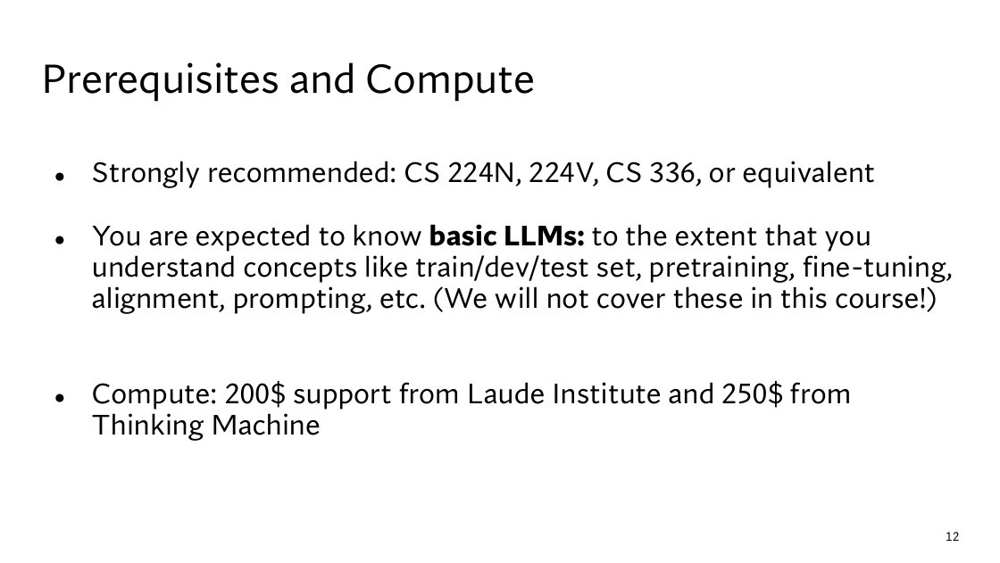 |
We recommend prior training in NLP or large language models. You should already be familiar with the basics, since we will assume knowledge of topics such as pretraining, fine-tuning, and alignment. For compute, the Laude Institute is providing each student with $200 in credits, and Thinking Machines is providing $250 in Tinker credits. |
Slide 14 · Homework and exam performance with AI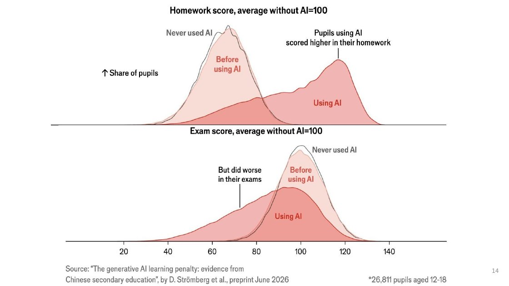 |
Look at the two comparisons in this figure. The upper panel shows homework scores for students who used AI and students who did not. The students using AI did very well on the homework. The lower panel shows exam scores for the same groups. There, the distribution for the group without AI is closer to the high end, while more students in the AI group scored lower. An advantage on the assisted work can coincide with weaker performance on the exam. |
Slide 15 · The Hidden Cost: Skills Erode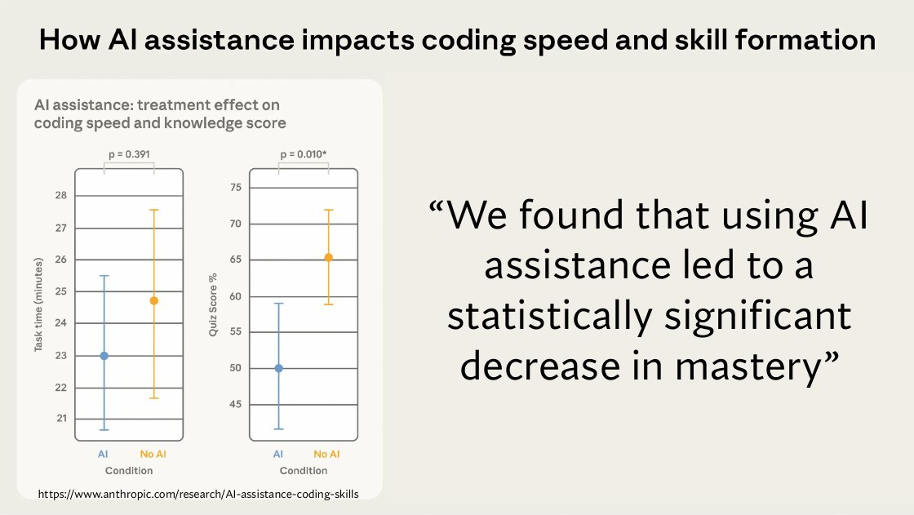 |
Anthropic examined a similar issue in a study of engineers doing a coding task. The engineers using AI completed the task faster, but their follow-up quiz scores indicated weaker mastery. Think about what happens when a coding agent produces a thousand lines on your behalf. Having the code in front of you leaves a separate question about how well you understand it. |
Slide 16 · Use AI to learn how to learn : )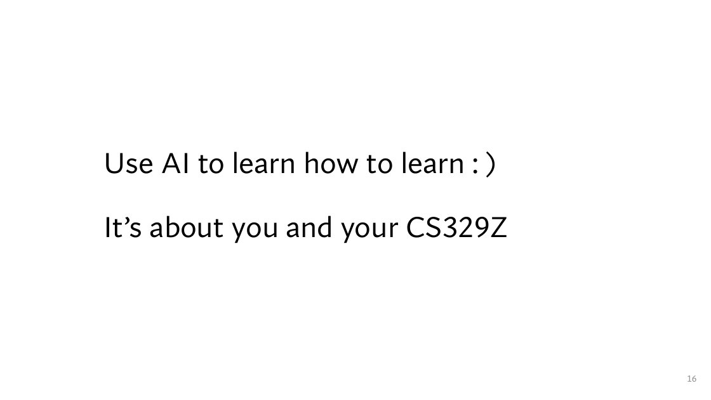 |
The goal is to use AI in ways that help you become a better learner. Keep that goal in view as you decide how to use it throughout CS329Z. |
Part 2
History of agents
| Slide | Lecture text |
|---|---|
Slide 17 · Lecture Overview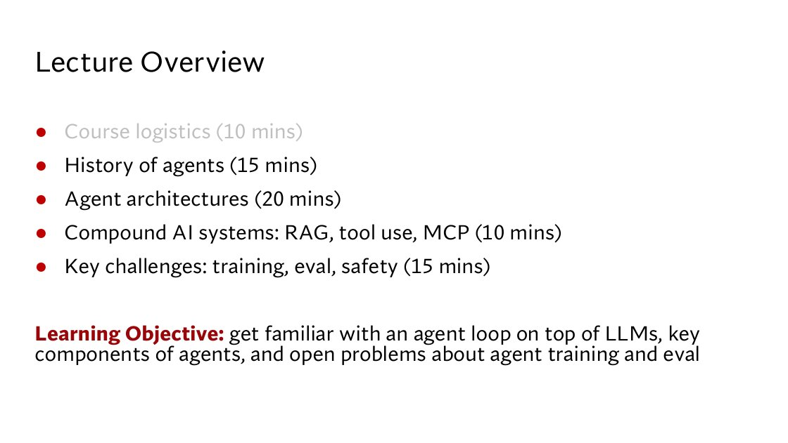 |
By the end of the lecture, you should be familiar with the loop that operates on top of a language model and the components that make up that loop. The historical examples will give us a way to understand where those components came from. |
Slide 18 · Agents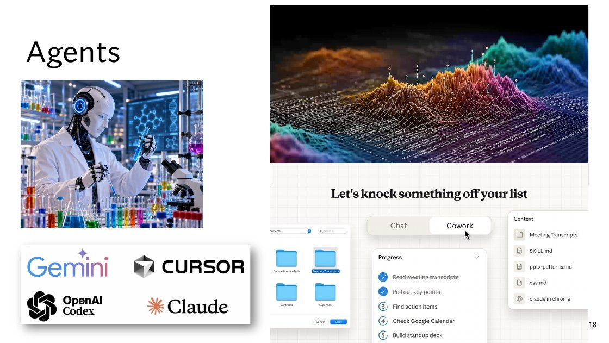 |
The term agent is familiar today, but the idea behind it has developed over decades. We will trace where the concept came from, how it changed as researchers built different kinds of systems, and what language models contributed to its recent growth. |
Slide 19 · History of Agents (before 1990)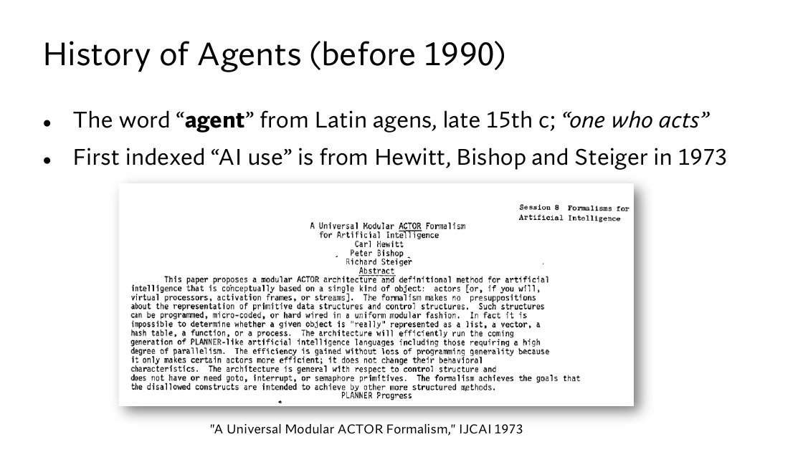 |
The word agent comes from a Latin root associated with acting. In AI, one early use appears in the 1973 Actor model proposed by Hewitt, Bishop, and Steiger. An actor waits for a message and performs an action in response. This is an early example of software entities acting independently in a system. |
Slide 20 · History of Agents (before 1990)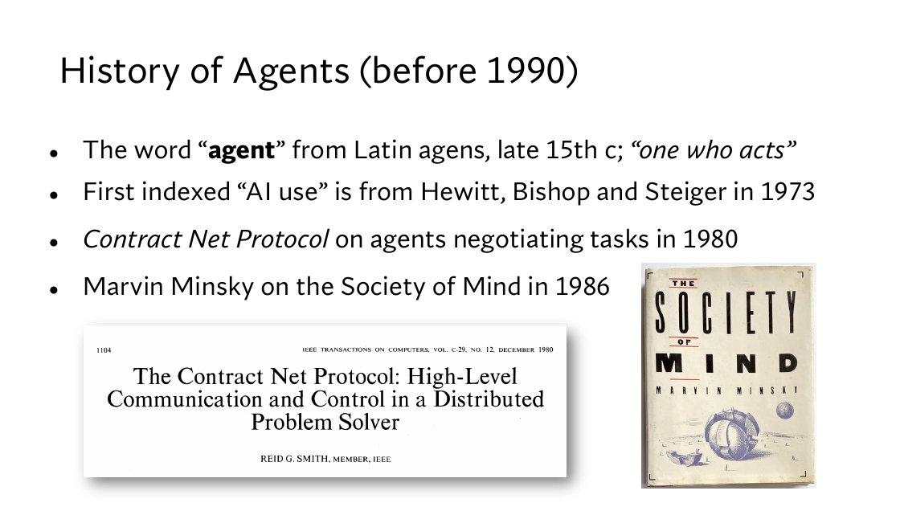 |
The Contract Net protocol asked how several agents could divide work and negotiate over who would take a task. Marvin Minsky’s Society of Mind described a collection of smaller agents cooperating to achieve an outcome. These ideas anticipate the coordination problems we now encounter in multi-agent systems. |
Slide 21 · History of Agents (the 1990s)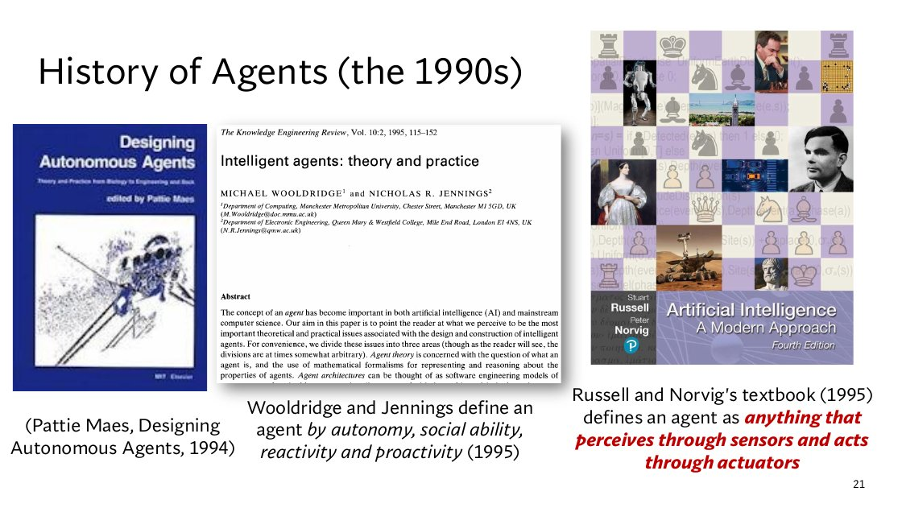 |
In the 1990s, researchers built more autonomous software agents and proposed different ways to define them. Some emphasized autonomy, social ability, reactivity, and proactivity. Russell and Norvig used a definition many students will recognize: an agent perceives its environment through sensors and acts on it through actuators. |
Slide 22 · History of Agents: the RL Era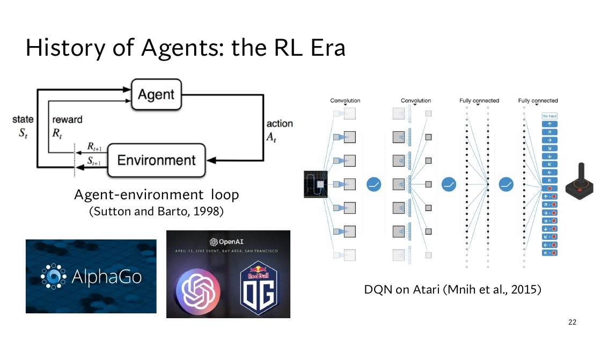 |
In the reinforcement learning setting, an agent acts on the basis of its state, and the environment returns feedback in the form of reward. This gives us a loop: observe, act, and experience the result. Sutton and Barto’s agent–environment diagram captures that structure. DeepMind’s Deep Q-Network applied this approach to games, and later systems such as AlphaGo and OpenAI Five achieved very strong performance in Go and Dota 2. Each of these systems was trained for a specific task. That specialization provides a point of comparison for what changed when large language models arrived. |
Slide 23 · History of Agents: the LLM Era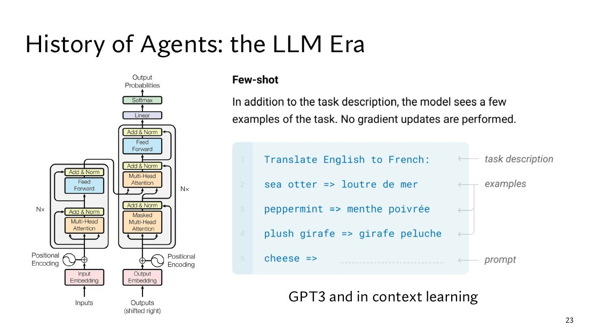 |
GPT-3 demonstrated a way to specify a task at inference time. For translation, you can describe the task and supply a few examples showing the desired input and output. The model uses those demonstrations as context for translating the next input. The task can be set up this way without updating the model’s weights. |
Slide 24 · What LLMs Made Possible: Reasoning and Tool Use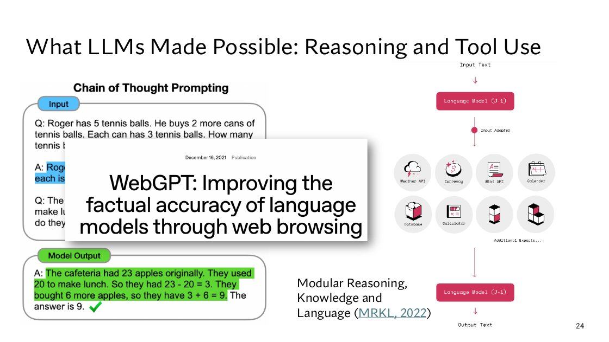 |
Prompting can do more than specify a new task. In the chain-of-thought example, the model is asked to work through the problem in steps. Generating those intermediate steps can help it arrive at a more accurate answer. Tools give the model another way to deal with a question it cannot answer with the information already available to it. WebGPT could use a browser to look up facts, and that approach led to further work on browser agents. MRKL illustrates how a system can route requests to outside specialists. A weather request can go to a weather API, and a coding task can go to a Python tool. With these two capabilities in place, a model can reason in steps and take actions through tools. |
Slide 25 · The Emergence of “Agents”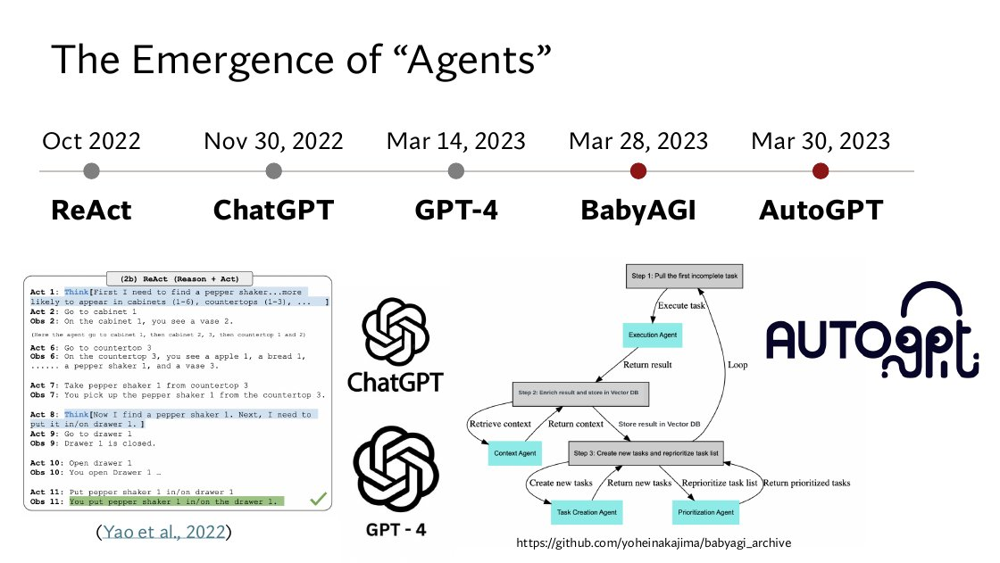 |
ReAct puts reasoning and action into a continuing loop. The model reasons about a next step, takes the action, and observes what happened. It can then use the observation in its next reasoning step. The release of ChatGPT made conversation with language models an everyday activity for many people. GPT-4 provided a stronger base for agents because it could follow longer instructions and plan more reliably. Two early open-source projects showed what developers could try with that stronger base. BabyAGI was given a goal, created a task list, worked through it, and could add tasks as work progressed. AutoGPT connected GPT-4 to tools such as search and the file system, so it could continue across several steps without the user sending a new prompt each time. Both projects had practical shortcomings, but they drew attention to a new range of possibilities for agents. |
Slide 26 · LLMs Getting Better: Model Capability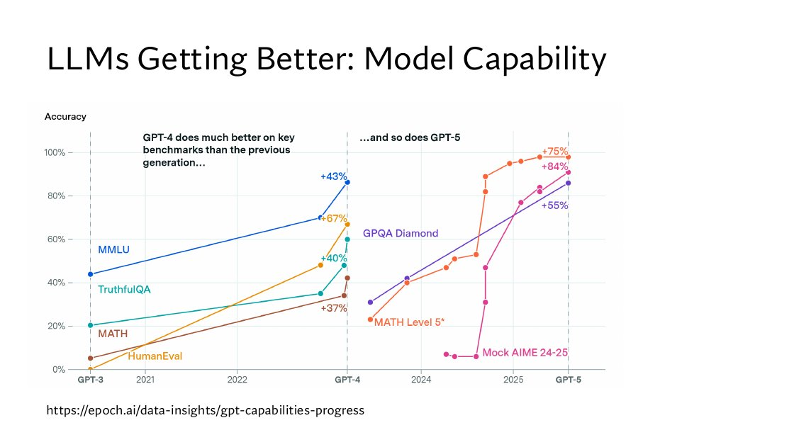 |
Compare GPT-3, GPT-4, and GPT-5 as base models. One example of the improvement from GPT-3 to GPT-4 is MMLU, where the chart shows a gain labeled 43%. Other benchmarks in that comparison also improved. By the time of the next comparison, some earlier datasets had been solved or had reached levels at which their scores were less informative. The newer comparison therefore includes harder tests, such as GPQA and more challenging mathematics problems. Improvements in the base model matter for an agent built on it. They can support better reasoning, fewer mistakes and hallucinations, and longer tasks. |
Slide 27 · Agents Getting Better: Agentic Capability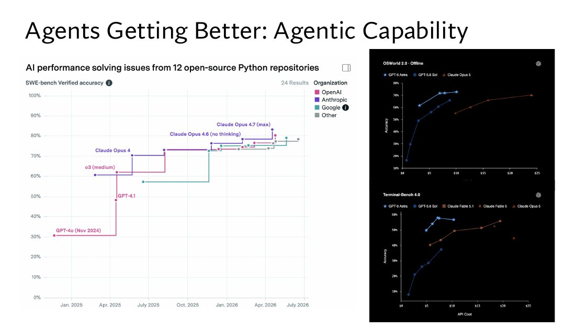 |
The improvement also shows up on tasks that require an agent to do something. On SWE-bench Verified, the results cited in the lecture start around 30% in early 2025 and rise substantially over the following year and a half. OSWorld measures computer use, while Terminal-Bench focuses on command-line tasks. Those results are increasingly shown alongside costs, so we can ask both how accurately an agent performs and how efficiently it reaches that result. |
Part 3
Agent architectures
| Slide | Lecture text |
|---|---|
Slide 28 · Lecture Overview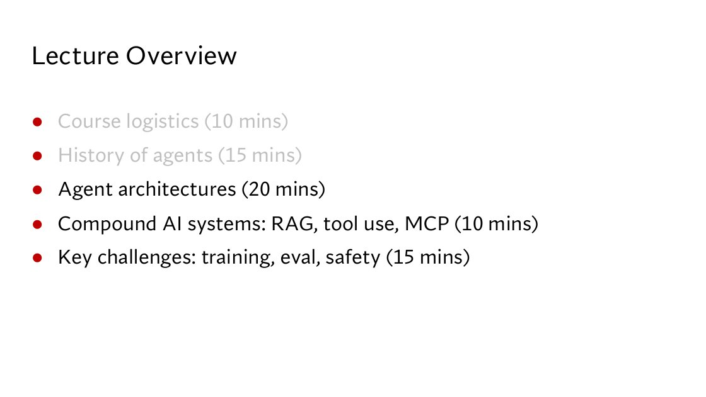 |
We have seen how agents developed and why language models accelerated that development. We can now examine a single agent closely and identify the pieces of its architecture. |
Slide 29 · Anatomy of an Agent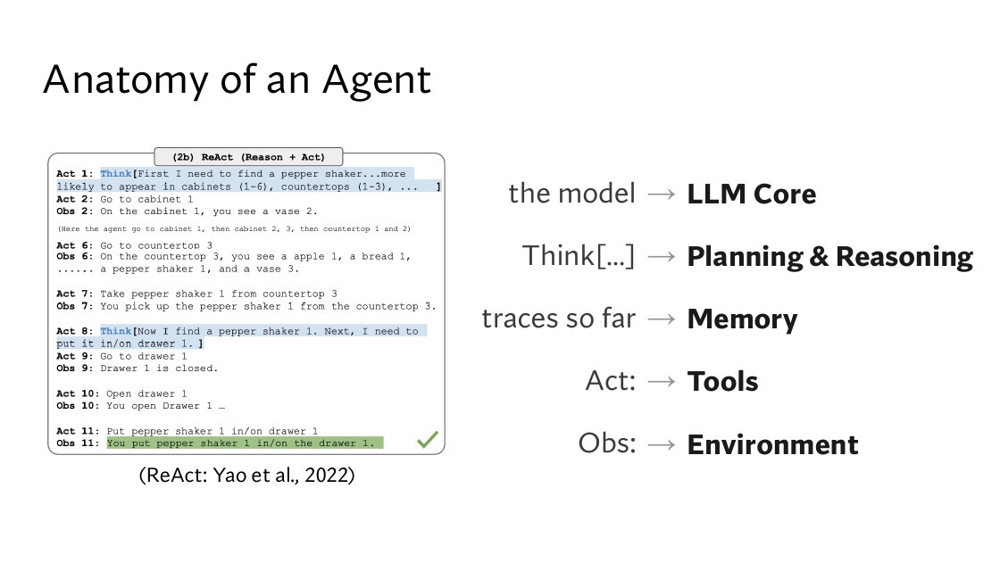 |
Consider the ReAct example in which the agent has to put a pepper shaker in a container. The underlying language model is the core. When the agent works out that a shaker is likely to be in a cabinet, that is planning and reasoning. At the current step, its earlier interactions form a trace it can use as memory. Going to a cabinet or picking up the shaker requires an action through a tool. After each action, the agent can see something about the environment. Even this small example contains five components: the model, reasoning and planning, memory, tools, and observations from the environment. |
Slide 30 · Agents: Key Components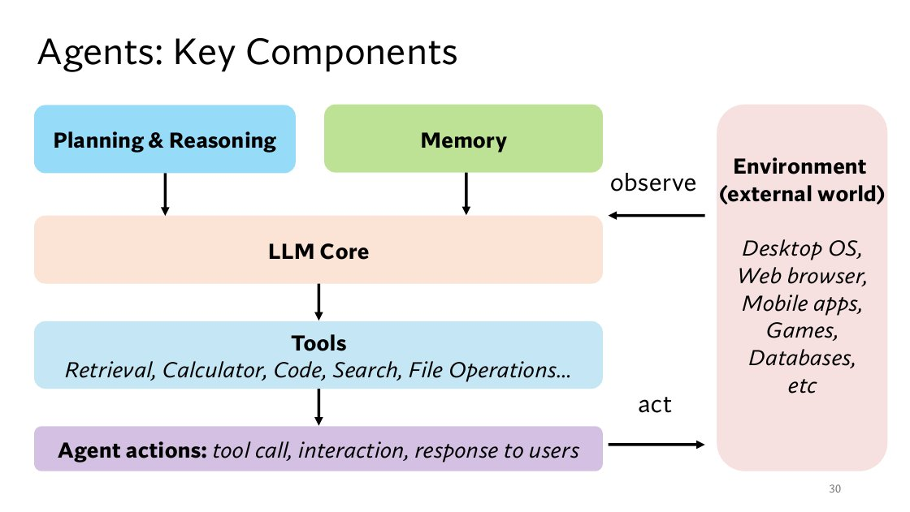 |
Treat the diagram as one way to identify the components and understand how they interact. The language model forms the core, and a stronger model will generally help. We can also improve the surrounding harness. A planning module can break a long task into smaller pieces, sometimes assigning them to subagents. Memory lets an agent working for hours take earlier events into account in later steps. Tools address gaps in the model’s own capabilities. A model may solve a difficult math problem and still be unable to tell you where today’s class meets without looking it up. It can consult the Stanford website for the room, a weather source for current conditions, or a calculator for a multiplication problem. The agent then takes actions and observes their effect in the environment. Each part of that arrangement can be configured, which explains the importance of optimizing the harness. |
Slide 31 · Similar Definitions of Agents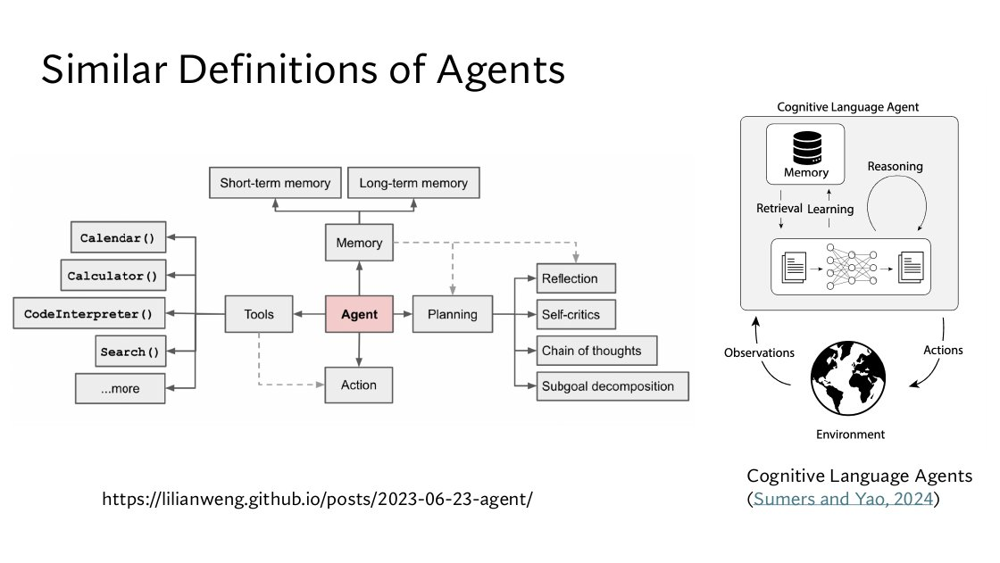 |
Researchers draw the boundaries of an agent in different ways. One description names planning, memory, tools, and action. Another distinguishes retrieval, which reads from memory, from learning, which writes to it. As you compare the diagrams, look for the common operation: a language model reasons, retains and retrieves information, and acts in an environment that provides feedback. |
Slide 32 · Agents: Key Components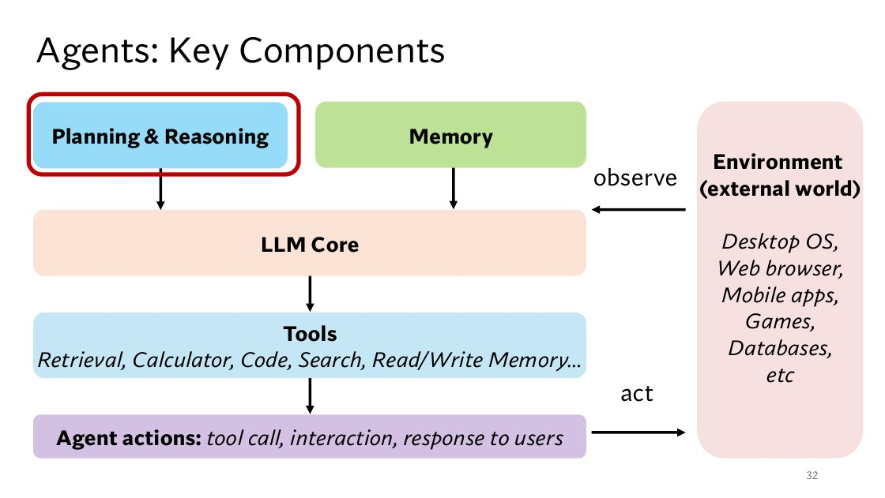 |
Let’s return to the component diagram and focus on planning and reasoning. We need to explain what reasoning means for a language model and why it affects the actions an agent takes. |
Slide 33 · Reasoning and Planning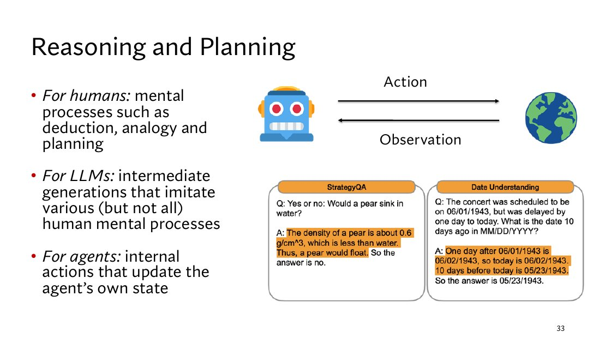 |
In people, reasoning can involve deduction, analogy, or planning. For language models, the visible intermediate steps in a chain-of-thought response are often called reasoning. Treat the comparison with human reasoning cautiously. The written steps may be an imperfect account of what went on inside the model. From a system perspective, we can treat reasoning as an internal action that updates the agent’s state before it decides what to do. |
Slide 34 · Why is reasoning helpful for agents?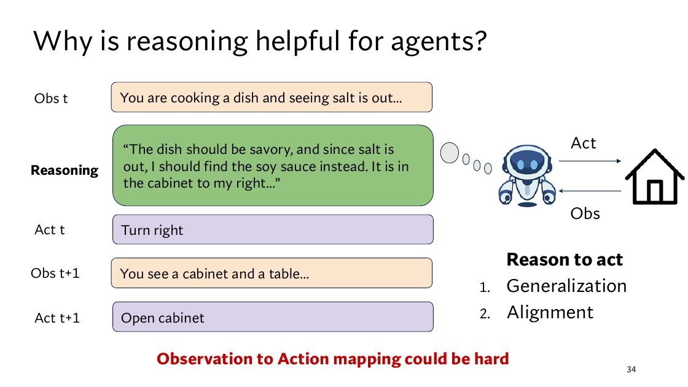 |
Suppose a cooking agent notices that it is out of salt and then turns right. The observation alone gives us little basis for understanding that action. An explicit reasoning step makes the link clear: the dish needs something savory, and a substitute may be in the cabinet on the right. There are two reasons this helps. A similar line of reasoning can apply in a new situation, which supports generalization. It also makes the action easier to inspect, which helps us see whether the agent is acting in line with its goal. |
Slide 35 · Reasoning without acting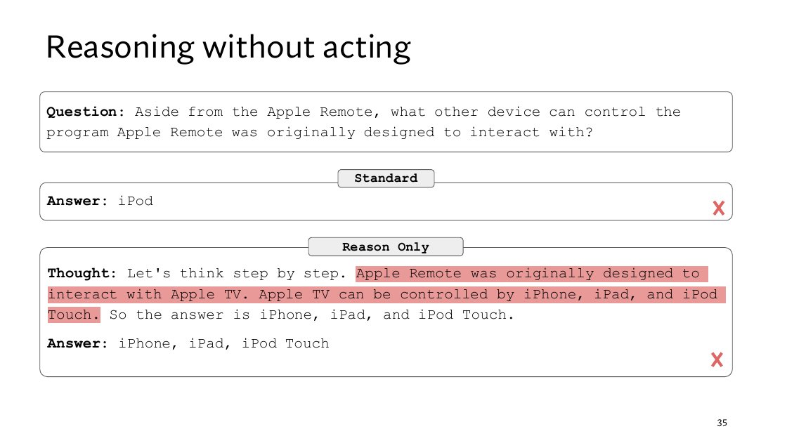 |
The HotpotQA example asks about a device that can also control the program for which the Apple Remote was originally designed. Standard prompting yields an incorrect answer. Chain of thought also goes wrong because the model reasons from an incorrect premise about the program. Its explanation can sound convincing even though that premise is false. |
Slide 36 · Reasoning with acting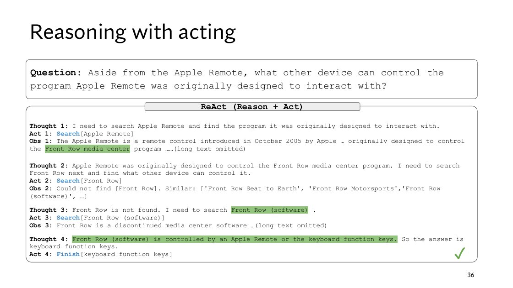 |
Now let the agent use its reasoning to decide what to look up. It searches for the Apple Remote and discovers that the original program was Front Row. That result changes the next question: what else controls Front Row? The next lookup does not produce the information it needs, so the agent refines the search and continues until it has enough evidence to answer. The trace lets us follow where new information came from and see how an observation changed the next action. Here, reasoning directs the search, and the search grounds later reasoning. |
Slide 37 · Comparing ReAct with COT, SC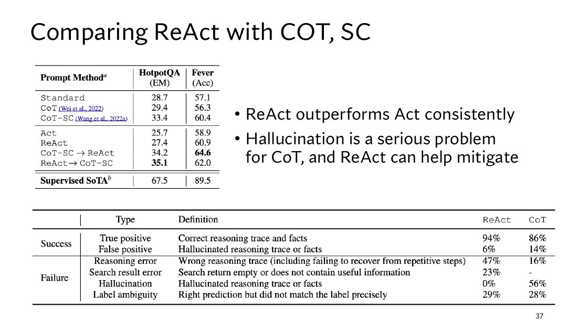 |
The results compare reasoning and action together with approaches that rely on action alone or chain of thought. ReAct consistently improves on the action-only baseline in the comparison shown. In the breakdown of failures, it still makes reasoning and search errors. The chain-of-thought failures include many cases of hallucinated reasoning or facts, while the ReAct column reports none in that category for this sample. External actions can help address hallucination even when other errors remain possible. |
Slide 38 · Self-Consistency [Wang et al., 2023]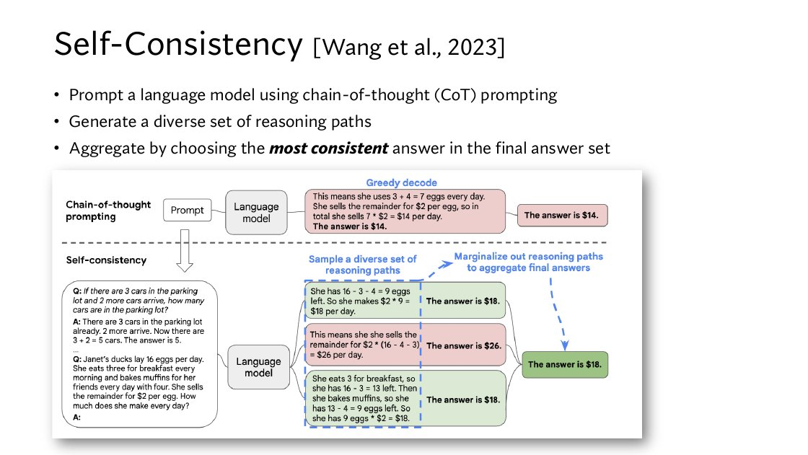 |
SC refers to self-consistency. Start with a chain-of-thought prompt and generate several reasoning paths. Then compare the final answers and select the one on which the paths most consistently agree. It resembles a majority vote over answers produced through different lines of reasoning. |
Slide 39 · Reflexion: agents reflect via natural language feedback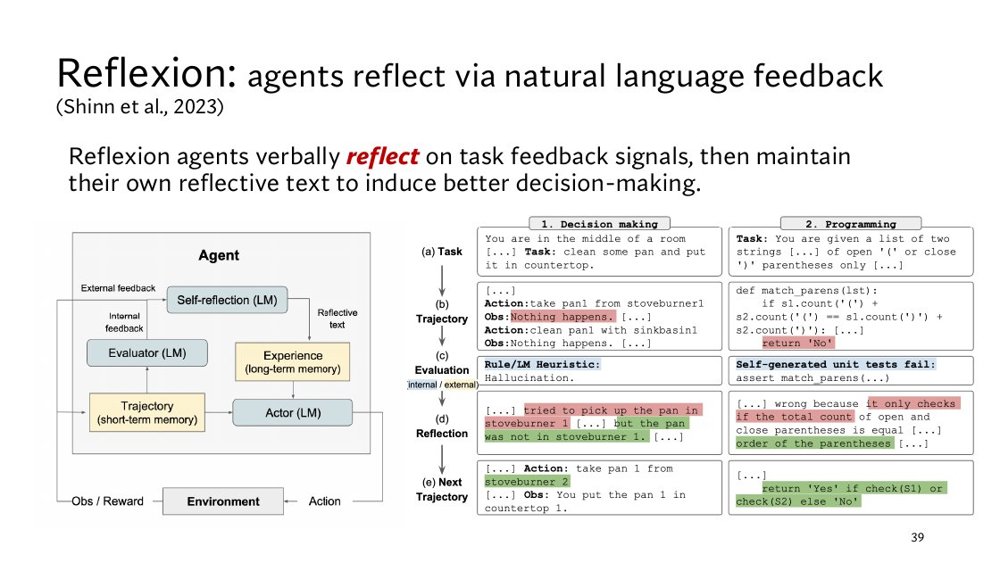 |
Reflexion gives an agent a way to learn from the experience of an attempt during the task. The current trajectory forms short-term memory. An evaluator judges the attempt, and the agent writes a reflection in natural language about why it received that result. The actor can then draw on both the original experience and the reflection when deciding what to do next. |
Slide 40 · Reflexion: agents reflect via natural language feedback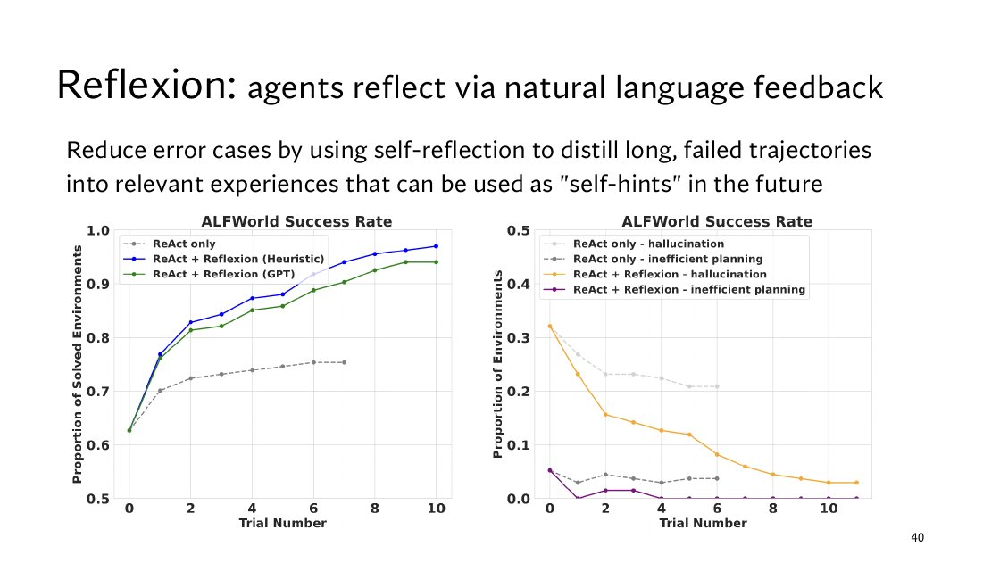 |
A failed attempt may generate a long trace. Self-reflection can condense that history into a lesson the agent can take into a later attempt. That lesson serves as a hint about what to change. In the results shown, adding Reflexion improved performance over ReAct alone and reduced hallucination. |
Slide 41 · Multi-agent debate to improve reasoning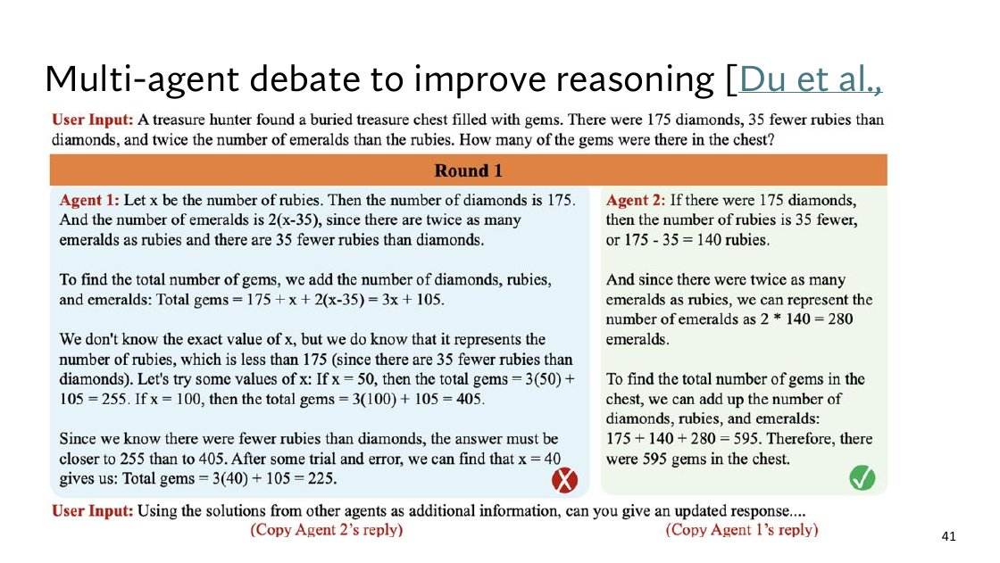 |
Multi-agent debate gives the same problem to several agents. After a round of solving it, each reads the reasoning produced by the others. The agents can then respond to each other’s views and use those perspectives to reach a final decision. |
Slide 42 · Multi-agent debate to improve reasoning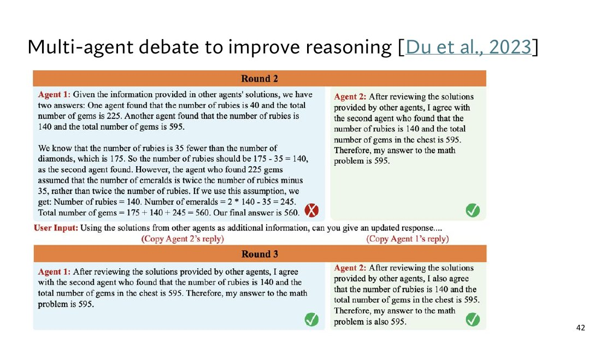 |
Multi-agent debate was useful as a prompting technique when individual models were relatively weak. As models become stronger, the gain in task performance from adding a debate may be smaller. Other reasons for using several agents remain. An agent may specialize in a domain such as health care, or a system might restrict access to sensitive information to a specific agent. The design can also be motivated by efficiency. |
Slide 43 · Coordinate with Orchestrator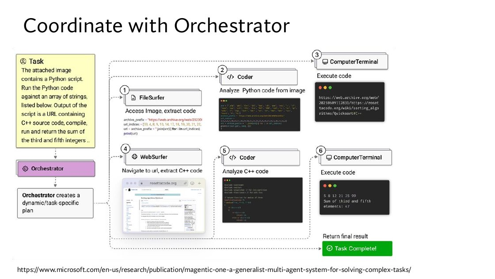 |
An orchestrator can first break a larger task into parts, then direct each part to an agent suited to it. In the Magentic example, different parts of the work involve files, code, and the terminal. Each agent handles its assigned work, and the results can be combined into a response for the user. |
Slide 44 · Agents: Key Components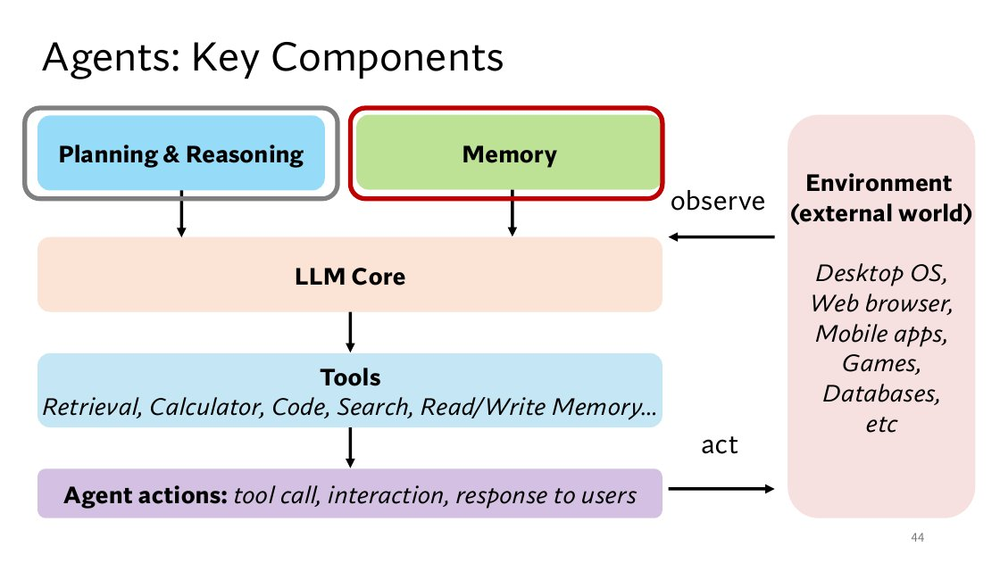 |
We have covered planning and reasoning. Memory is the next component, and there are several ways to design what an agent keeps and what it can recover later. |
Slide 45 · The Need for Memory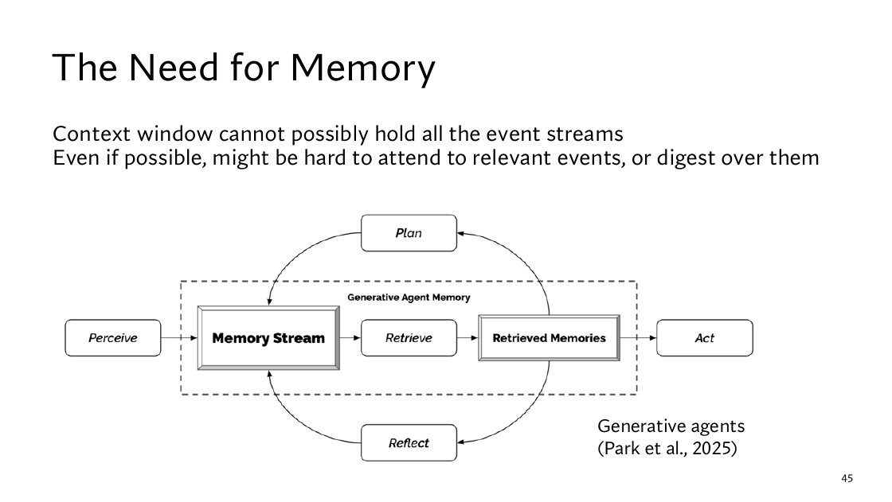 |
A long-running task can produce several hours of events. Even as context windows grow, they cannot always fit the complete stream, and a model may struggle to find the one relevant item among a thousand documents even when it has room for all of them. The Smallville simulation illustrates what memory can contribute. Each simulated character has a stream of past experiences. The system keeps track of what has happened to an individual so that later behavior can follow from earlier events. |
Slide 46 · Different Types of Memory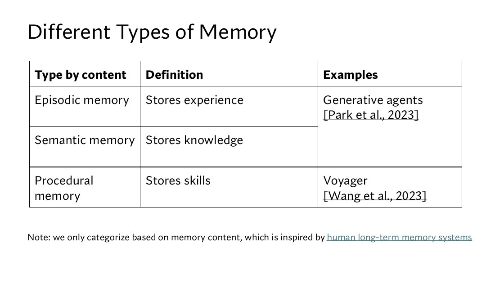 |
We can distinguish types of memory by the material they retain. Episodic memory keeps records of interactions, such as what the agent and the user said. Semantic memory captures events or knowledge in a more condensed form that may be useful later. Procedural memory saves a skill or a way to carry out a type of task. |
Slide 47 · Episodic Memory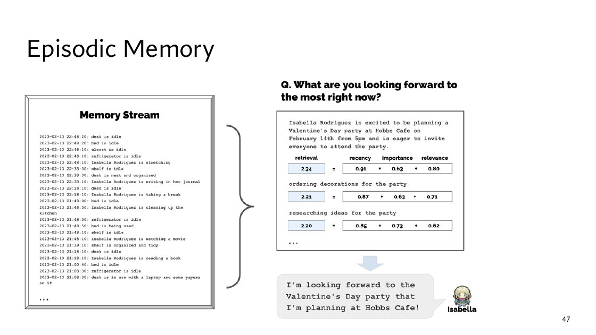 |
The episodic example keeps each event with its time step. You can recover the sequence of activities and see what actually happened at a particular point in the agent’s trajectory. |
Slide 48 · Semantic Memory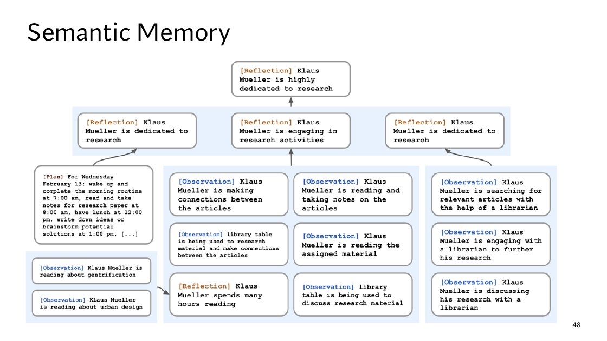 |
Semantic memory can represent several minutes of activity as a short description. The agent can use that synthesis to remember what occurred over that period without having to process each entry in the trace on every later step. |
Slide 49 · Procedural Memory [Wang et al., 2023]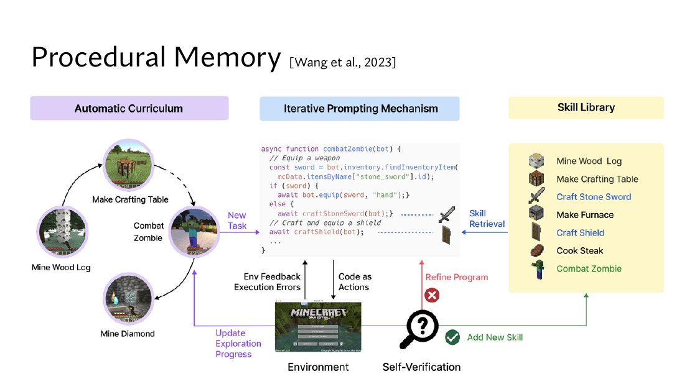 |
In Voyager, an agent learns to act in Minecraft. When it works out a new skill, the system can save the procedure in a skill library. On a later task, the agent can retrieve a suitable skill and use it again. The memory retains a way to do something that can be applied to future tasks. |
Slide 50 · Agents: Key Components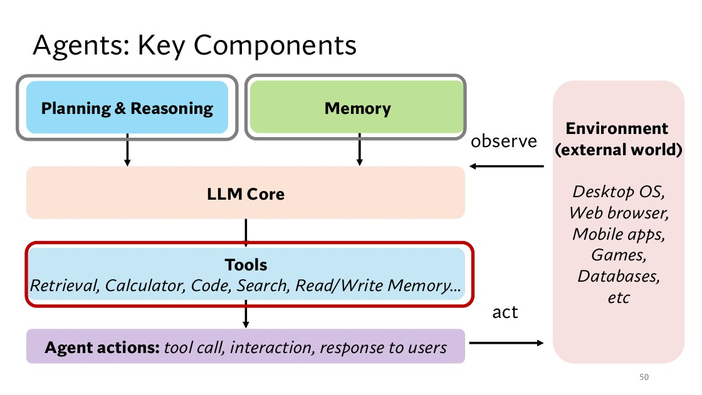 |
The next component is tool use. An agent can call external systems for work such as search or coding. We will look briefly at how earlier models learned when to use those tools. |
Slide 51 · Toolformer: LLMs can teach themselves to use tools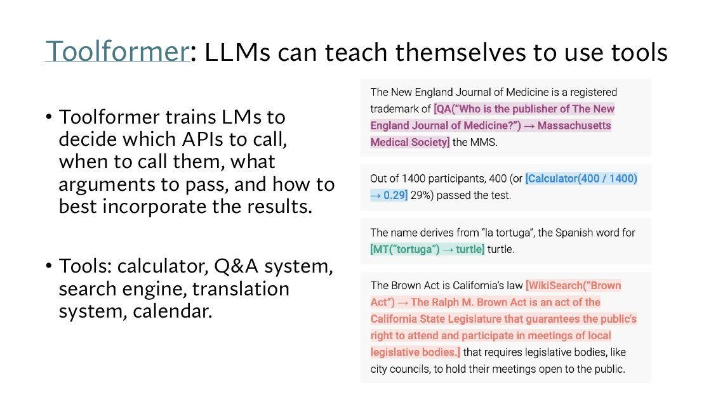 |
Toolformer explores how a tool call can occur while a response is being generated. Imagine a model writing a sentence about the publisher of a medical journal. At the point where it needs the publisher’s name, it can issue a question-answering call and use the returned information to continue writing. Learning to use a tool means learning where and when to call one and which API is suitable. The system used a limited set of tools, including a calculator, question answering, search, translation, and a calendar. That setup illustrates a principle that later systems applied to a wider range of tools. |
Slide 52 · Gorilla: LLMs connected with massive APIs (Patil et al., 2023)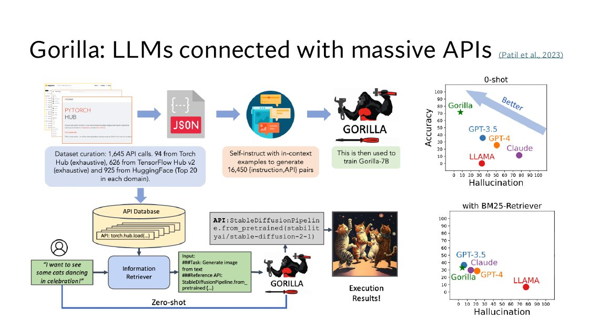 |
Gorilla broadens tool use to more than 1,600 APIs gathered from Hugging Face, Torch Hub, and TensorFlow Hub. The project generated synthetic data about those APIs and used it to train a seven-billion-parameter model. Consider a request for an image of dancing cats. The system can retrieve a suitable tool, such as Stable Diffusion, and hand off image generation to it. The underlying model can satisfy the request by selecting and using the external tool. In the results shown, this approach improved API accuracy and reduced hallucinated calls. |
Slide 53 · Putting It All Together: Skeleton of an Agent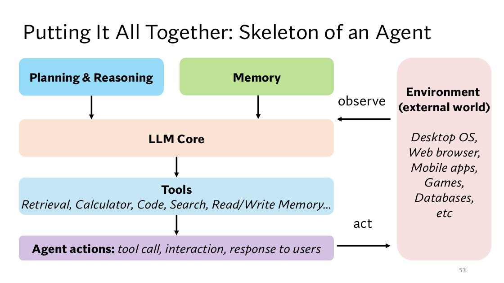 |
Put the pieces together. A language model reasons and plans. Memory carries state across steps and tasks, and tools connect the model to external operations. The agent’s actions affect an environment, which provides new observations. A coding agent, browser agent, or terminal agent can follow this structure. Their differences come from how the components are implemented and how well they work together. |
Part 4
Compound AI systems
| Slide | Lecture text |
|---|---|
Slide 54 · Lecture Overview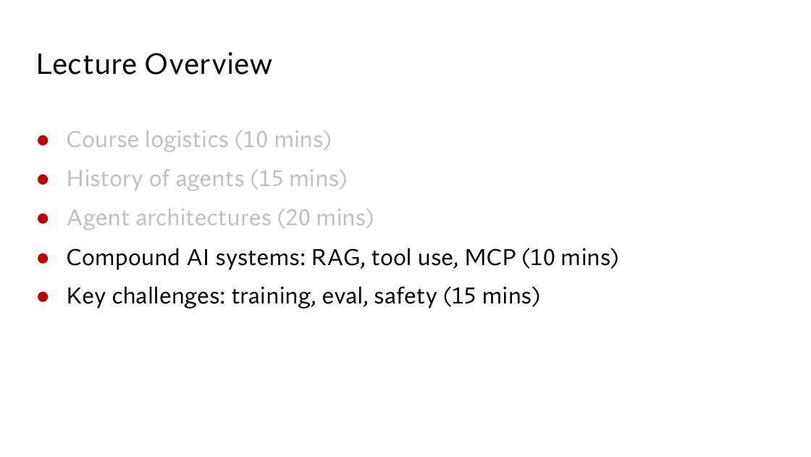 |
An individual agent already combines several pieces. The next question is how real applications assemble model and system components into a compound AI system. |
Slide 55 · Agents: Three Layers |
One way to make agent engineering manageable is to think in terms of system, data, and evaluation. The system layer describes which components the agent has and how they connect. Data includes examples used for training, demonstrations of tasks, and the context available to the agent. Evaluation defines whether the agent works and how that will be measured. A poor metric can make a weak agent appear successful. When results fall short of expectations, look at the system, the data, and the evaluation before deciding where the problem lies. |
Slide 56 · Workflows vs. Agents: Who Decides the Steps? |
In a workflow, code defines the next stage. Agentless, for example, follows a sequence for finding the relevant file, writing a patch, and testing it. The language model works inside those stages. An agent such as SWE-agent can decide which files to inspect, which actions to run, and when the task is finished. This gives the model more flexibility and responsibility. Fixed workflows can be powerful. AlphaCode 2 generates a large set of candidate programs and then tests and ranks them. That structured process was sufficient to reach a strong result against human competitors. |
Slide 57 · Retrieval Augmented Generation (RAG) |
Retrieval-augmented generation is a common workflow for questions that depend on external information. For a question about today’s weather, the system can query a weather website or API, retrieve the relevant information, and add it to the model’s context. The model can then generate a response based on the retrieved facts. |
Slide 58 · Tool Use: Anatomy of a Call |
A tool call begins with choosing a tool from the schemas available in the context. The model fills in the arguments, and the system checks them against the required schema. Constrained decoding may prevent the model from producing a malformed call. A validated call is executed, often in a sandbox, and its result is returned to the model’s context. For a question about test.py, the model selects a file-reading tool and supplies the path. The system checks that the path has the expected type, executes the read, and returns the contents so the model can answer. |
Slide 59 · Model Context Protocol (MCP) |
Custom integrations become hard to scale if every AI application must connect to each tool independently. The Model Context Protocol gives applications and tools a shared way to communicate. Applications such as desktop assistants and code editors act as clients. Servers expose data and operations such as database queries, cloud files, and productivity tools. A tool built for an MCP server can then be used from different compatible clients. |
Part 5